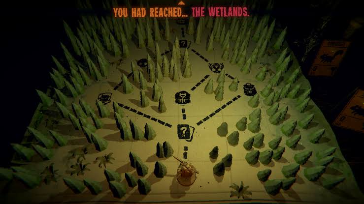
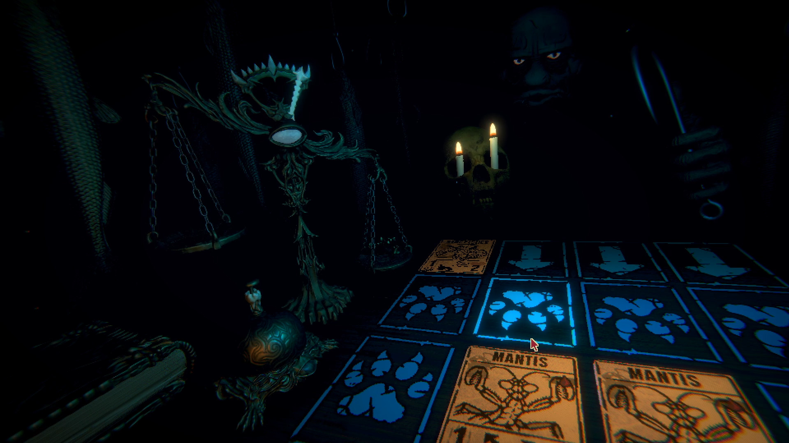
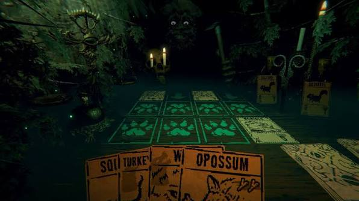

Sobre o jogo:
Inscryption é uma mistura de jogo de cartas, construção de baralho,
roguelike, quebra-cabeças e horror psicológico.
O jogador começa preso em uma misteriosa cabana,
onde é forçado a participar de partidas
de cartas contra uma figura conhecida como Leshy.
Conforme as partidas avançam, o jogador começa a descobrir
que existe muito mais por trás daquela cabana e das cartas.
A história envolve diferentes personagens, jogos dentro de jogos
e uma misteriosa força chamada OLD_DATA,
fazendo com que a própria realidade do jogo seja questionada.
Imagens:


Gameplay e Trailer:
Trilha sonora:
- Nome da faixa: Leshy's Theme.
- Número da faixa: 6.
- Nome da faixa: Vodka.
- Número da faixa: 15.
- Nome da faixa: G0lly's Theme (Uploading).
- Número da faixa: 23.
Informações:
- Lançamento: 2021
- Desenvolvedora: Daniel Mullins Games
- Publicadora: Devolver Digital